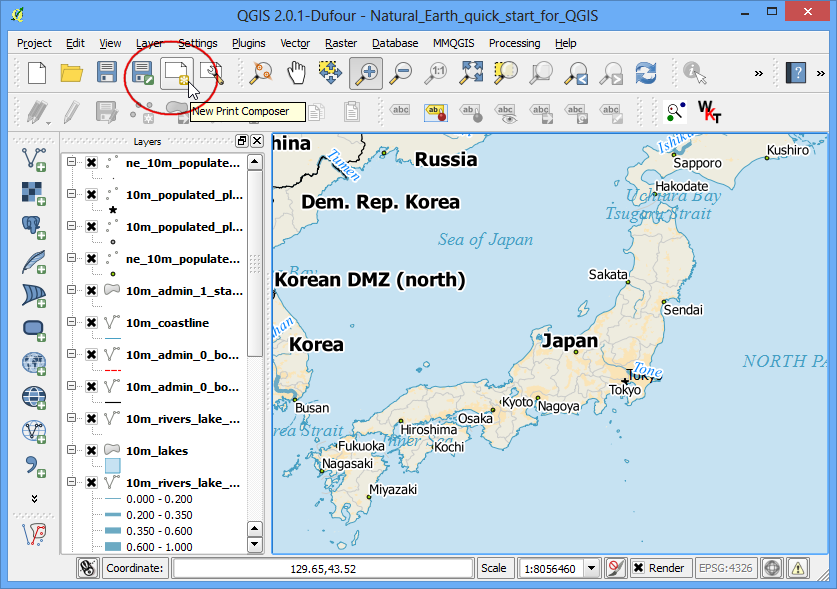
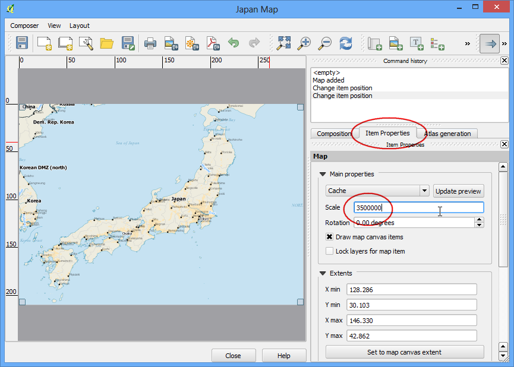
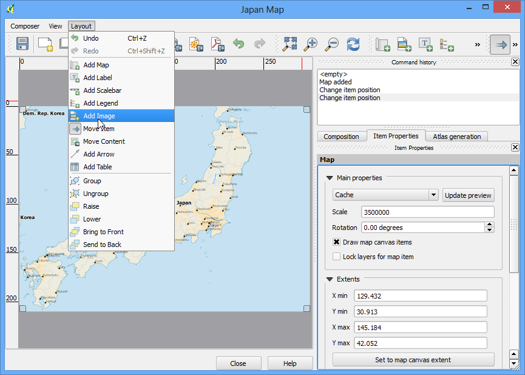
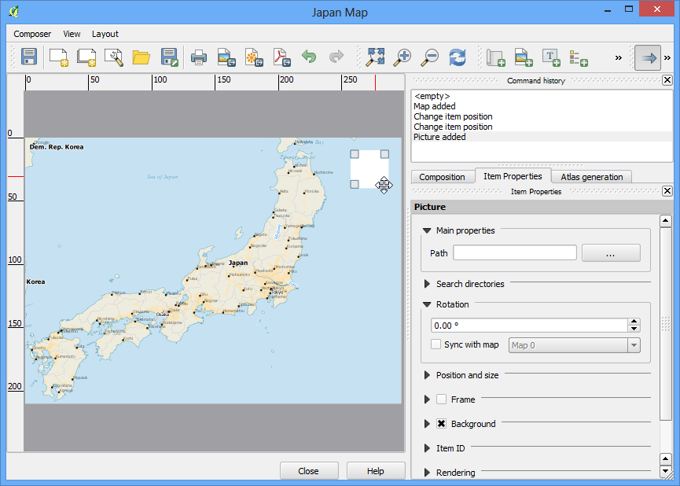
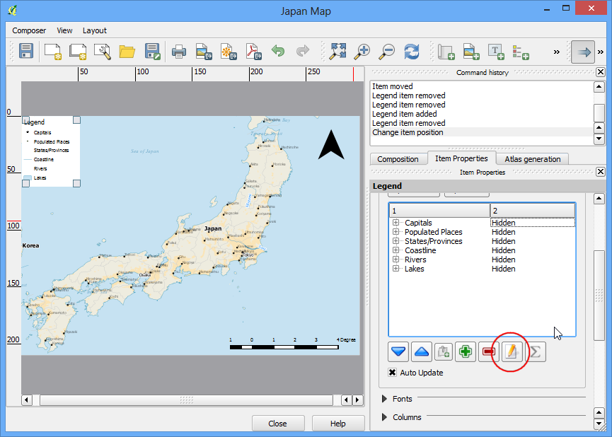
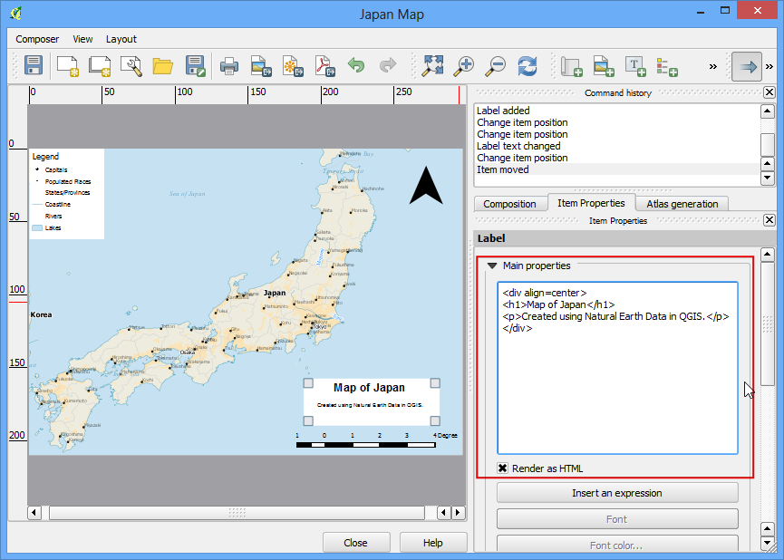
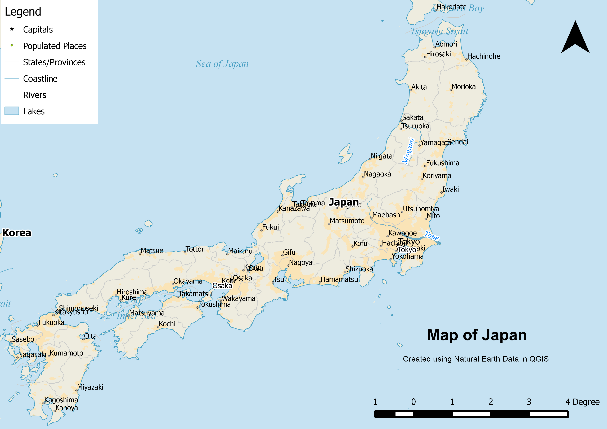

Making a Map¶
Often one needs to create a map that can be printed or published. QGIS has a powerful tool called Print Composer that allows you to take your GIS layers and package them to create maps.
Overview of the task¶
The tutorial shows how to create a map of Japan with standard map elements like north arrow, scale bar, legend and label.
Get the data¶
We will use the Natural Earth dataset - specifically the Natural Earth Quick Start Kit that comes with beautifully styled global layers that can be loaded directly to QGIS.
Download the Natural Earth Quickstart Kit.
Procedure¶
- Download and extract the Natural Earth Quick Start Kit data. Open QGIS. Click on File ‣ Open Project.

- Browse to the directory when you had extracted the natural earth data. You should see a file named Natural_Earth_quick_start_for_QGIS.qgs. This is the project file that contains styled layers in QGIS Document format. Click Open.

- You would see a lot of layers in the table of content and a styled world map in the QGIS canvas. If you see errors displayed at the top of the canvas, click on the cross to close it.

- In this tutorial, we will make a map of Japan. Click the Zoom In button and draw a rectangle around Japan to zoom to the area.

- Once you are centered around the area of interest, click on the New Print Composer button. It is also accessible by Project ‣ New Print Composer.

- You will be prompted to enter a title for the composer. Enter ‘Japan map’ and click Ok.

- In the Print Composer window, click on Zoom full to display the full extent of the Layout.

- Now we would have to bring the map view that we see in the QGIS Canvas to this layer. Click on the Add Map button. This tool can also be access from Layout ‣ Add Map.

- Once the Add Map button is active, hold the left mouse button and drag a rectangle where you want to insert the map.

- You will see that the rectangle window will be rendered with the map from the main QGIS canvas. Since we want our map to be covering the full extent of the layout, drag the corners of the rectangle to the edges.

- Let us adjust the zoom level for the given map. Click on the Item Properties tab and enter 3500000 for Scale value.

- Now we will add a North Arrow to the map. Print Composer comes with a nice collection of map-related images - including many types of North Arrows. Click Layout ‣ Add Image.

- Holding your left mouse button, draw a rectangle on the top-right corner of the map canvas.

- On the right-hand panel, click on the Item Properties tab and expand the Search directories section and select the North Arrow image of your liking.

- Next, scroll down below and un-check the Background option. This will make the image transparent.

- Now we will add a scale bar. Click on Layout ‣ Add Scalebar.

- Click on the layout where you want the scalebar to appear. From the Item Properties tab, choose the Style that fit your requirement. Also change the units to be Map units and label it ‘Degree’ since the map units are degress. You should also set the transparency by un-cecking the Background option.

- Now we will add a legend to the map. Click on Layout ‣ Add Legend.

- Click on the layout where you want the legend to appear. Since our layer list is huge, you will see a big box with all the layers appear.

- Click on the Item Properties tab and select the layers which we do not want in the legend. Click the - button to remove it from the legend. Also, selec

- For the purpose of this map, we will keep legend information only for the five layers as seen below. Click on the Edit button and change the display text for the legend items to be more readable.

- Now time to label our map. Click on Layout ‣ Add Label.

- Click on the map and draw a box where the label should be. In the Item Properties tab, expand the Label section and enter the text. We can enter the text as HTML as well. Check the box Render as Html so the composer will interpret the HTML tags.

- Once you are satisfied with the map, you can export it as Image, PDF or SVG. For this tutorial, let’s export it as an image.

- Save the image in the format of your liking. Below is the exported PNG image.
